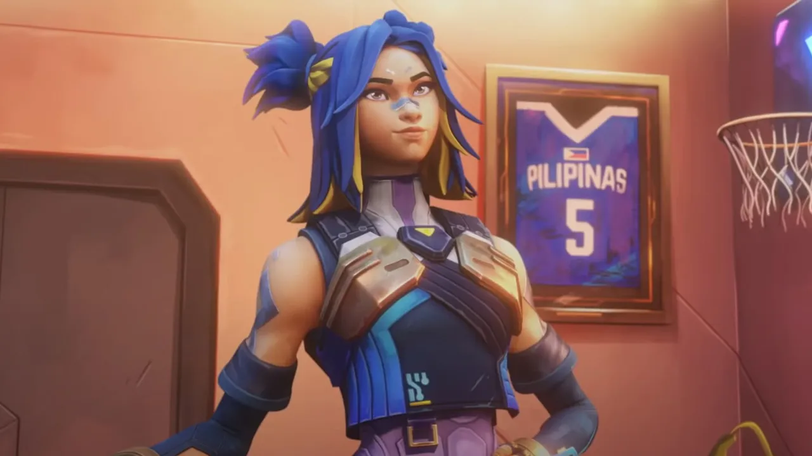

Riot se cansó. El parche 12.09 llega el martes 12 de mayo con los dos cambios que la comunidad venía pidiendo hace meses: un nerf serio a Neon y un ajuste global a las escopetas. No son parches chicos — son cambios de diseño que van a mover el meta.
Neon: se acabó el vuelo
El problema de Neon siempre fue el mismo: en manos de alguien que sabe jugarla, el combo de velocidad + salto la volvía casi imposible de leer. Riot lo reconoce y actúa.
Además, Riot va a actualizar los efectos visuales de Neon para que sea más claro desde dónde va a slidear y hacia dónde. Esto ayuda a los enemigos a leer sus movimientos — algo que antes era casi imposible.
El cambio es grande. Neon con High Gear dejaba de tener sentido "apuntarle al cuerpo" porque estaba constantemente cambiando de altura en el aire. Ahora eso se termina: si salta con High Gear, va a tener velocidad de melee en el aire, no de sprint.
Escopetas: el movimiento tiene costo
El otro cambio que viene es un ajuste global a la mecánica de precisión de todas las escopetas. La idea es simple: si estás en movimiento, las escopetas tienen que funcionar peor. Porque ahora mismo el Judge y el Bucky se podían usar corriendo y dando saltos con demasiada efectividad.
Los valores de inaccuracy al correr, caminar, agacharse caminando y saltar van a estar estandarizados en todas las escopetas. Cuando el multiplicador de precisión al agacharse aplica, va a ser un 15% fijo. En movimiento o en el aire, las escopetas van a exigir posicionamiento más limpio.
Esto no mata al Judge ni al Bucky — son armas de distancia corta y eso no cambia. Lo que cambia es que el judge-run-and-gun va a tener mucho menos margen de error del que tenía hasta ahora.
¿Qué no cambia?
El parche 12.09 es principalmente de balance sin nerfs a agentes adicionales ni cambios de mapa. Riot empujó estos cambios antes de lo planeado (estaban en agenda para el parche 13.00 de junio) después de que la frustración de la comunidad con Neon llegó a un punto de quiebre: la sacaron del juego temporalmente por un bug visual, y aprovecharon ese downtime para acelerar los cambios.
El parche cae el 12 de mayo. Si jugás contra Neon y con escopetas, el 13 de mayo el juego se va a sentir bastante diferente.